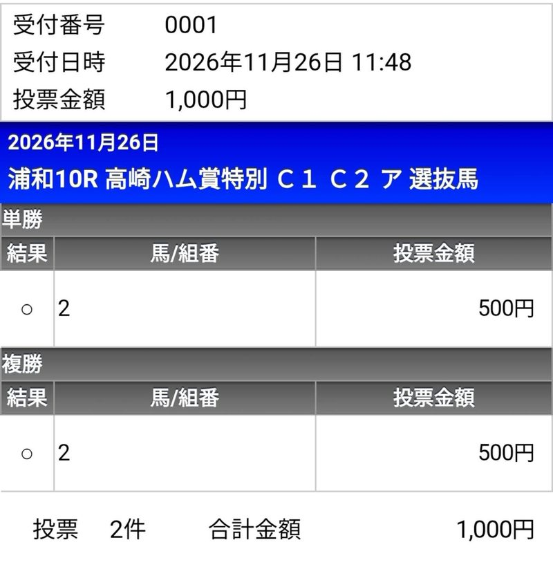

800m戦は一瞬でしたね。明日（11月27日）の浦和9〜12Rは全頭を判定しましたが、作戦の条件に合う馬はいませんでした。明日は馬券なしです。
■今日の結果
11/26 浦和10R 高崎ハム賞特別 ◎2 ウールドランジュは7着でした。1,000円→0円です。1着は12 ハニーマスタード、2着は8 ビナラオカイ、3着は10 ビヴァアカプルコでした。
２ 単勝 ５００円
２ 複勝 ５００円

■明日の予想ファクターフォワードテスト
本予想・エア馬券とは別に、他の作戦の条件に合った馬を毎日記録していくテストです。
| レース | ◎馬名 | 作戦名 |
|---|---|---|
| 浦和9R 小春日和特別 | ゴールドアムレット | 花の山1.1 |
| 浦和10R 信州産はちみつ賞特別 | ブレイジングヒート | 花の山1.1 |
| 浦和12R 安全・あんしん信州プレミアム牛肉賞特別 | ビリーヴィン | 花の山1.1 |
仮想購入額は単勝・複勝 各５００円です。
■今日の予想ファクターフォワードテストの結果
| レース | ◎馬名 | 作戦名 | 着順 | 仮想払戻 |
|---|---|---|---|---|
| 浦和9R 東毛酪農６３℃賞特別 | ストロンゲスト | 花の山1.1 | 9着 | 0円 |
| 浦和9R 東毛酪農６３℃賞特別 | ブルームコード | Mの法則27版1.0 | 2着 | 650円 |
| 浦和10R 高崎ハム賞特別 | スマートアライヴ | Mの法則27版1.0 | 10着 | 0円 |
| 浦和11R サザンスタースプリント | ニンゲンテイイナ | Mの法則27版1.0 | 13着 | 0円 |
| 浦和12R 群馬県畜産協会長賞特別 | ペイシャコパ | Mの法則27版1.0 | 8着 | 0円 |
仮想購入額は単勝・複勝 各５００円です。
■年間成績
＜本年成績＞
中央 214戦26勝 292,400円→181,380円 -111,020円 62%
地方 20戦4勝 20,000円→17,250円 -2,750円 86%
合計 234戦30勝 312,400円→198,630円 -113,770円 64%
払戻"金"投資 108,020円→88,147円 -19,873円 -18.4%
エア予想成績：28レース・的中12レース 仮想購入28,000円→仮想払戻26,150円 仮想回収率93.4%（本年成績には含みません）